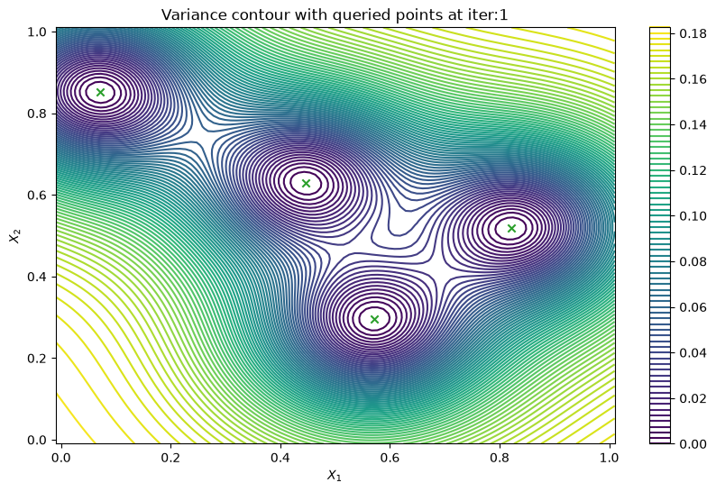
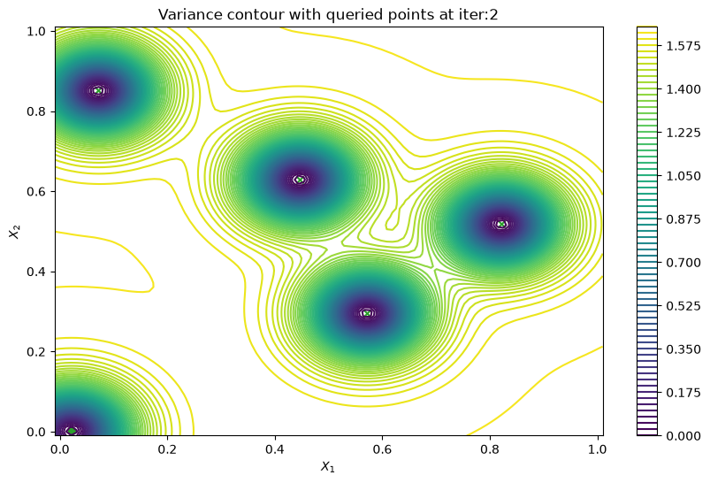
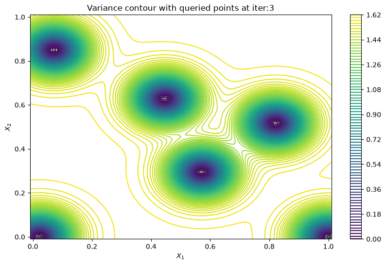
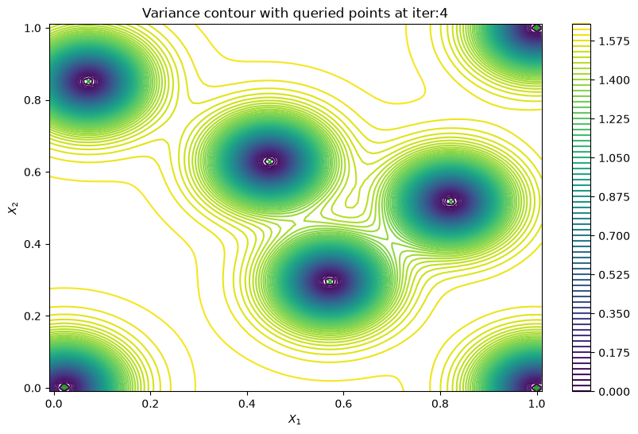
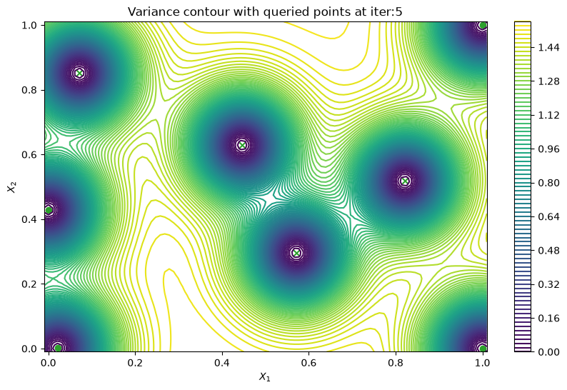
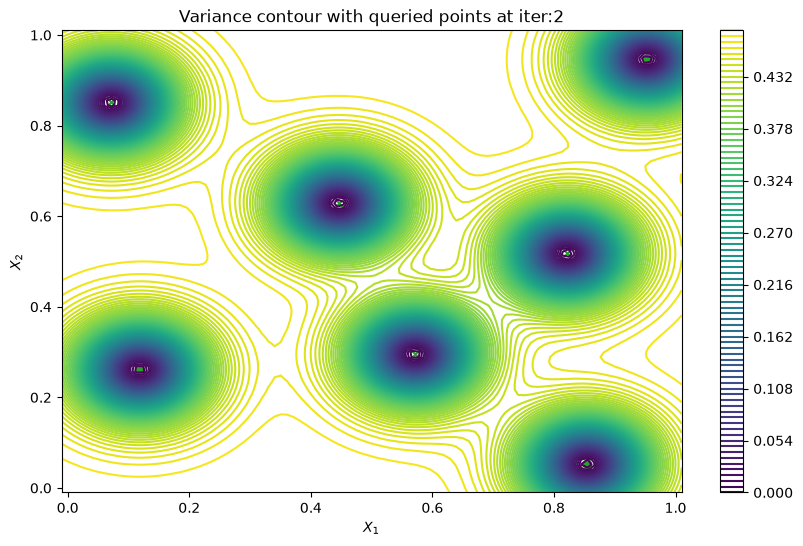
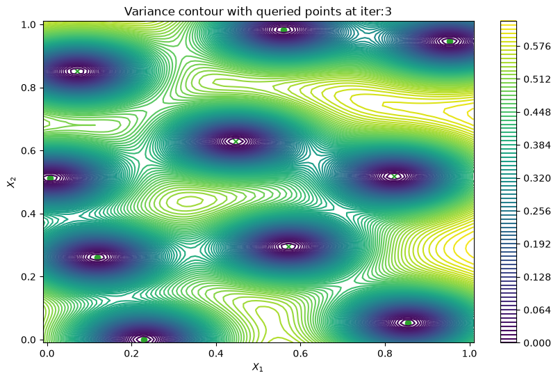
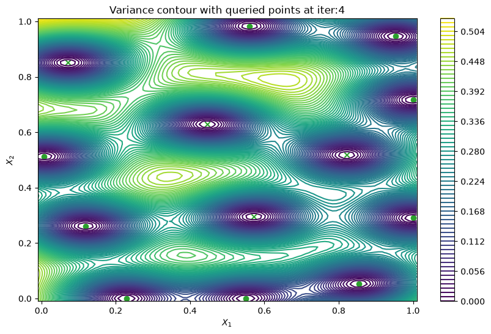
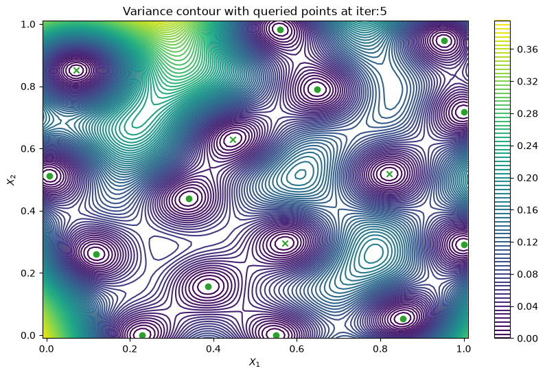

Active learning#
Sometimes, we may just want to learn a black-box function, rather than optimizing it. This goal is known as active learning and corresponds to choosing query points that reduce our model uncertainty. This notebook demonstrates how to perform Bayesian active learning using Trieste.
[1]:
%matplotlib inline
import numpy as np
import tensorflow as tf
np.random.seed(1793)
tf.random.set_seed(1793)
WARNING: All log messages before absl::InitializeLog() is called are written to STDERR
E0000 00:00:1790933475.853363 2515 cuda_dnn.cc:8310] Unable to register cuDNN factory: Attempting to register factory for plugin cuDNN when one has already been registered
E0000 00:00:1790933475.857717 2515 cuda_blas.cc:1418] Unable to register cuBLAS factory: Attempting to register factory for plugin cuBLAS when one has already been registered
Describe the problem#
In this example, we will perform active learning for the scaled Branin function.
[2]:
from trieste.objectives import ScaledBranin
from trieste.experimental.plotting import plot_function_plotly
scaled_branin = ScaledBranin.objective
search_space = ScaledBranin.search_space
fig = plot_function_plotly(
scaled_branin,
search_space.lower,
search_space.upper,
)
fig.show()
Data type cannot be displayed: application/vnd.plotly.v1+json
We begin our Bayesian active learning from a small initial design built from a space-filling Halton sequence.
[3]:
import trieste
observer = trieste.objectives.utils.mk_observer(scaled_branin)
num_initial_points = 4
initial_query_points = search_space.sample_halton(num_initial_points)
initial_data = observer(initial_query_points)
Surrogate model#
Just like in sequential optimization, we fit a surrogate Gaussian process model as implemented in GPflow to the initial data. The GPflow models cannot be used directly in our Bayesian optimization routines, so we build a GPflow’s GPR model using Trieste’s convenient model build function build_gpr and pass it to the GaussianProcessRegression wrapper. Note that we set the likelihood variance to a small number because we are dealing with a noise-free problem.
[4]:
from trieste.models.gpflow import GaussianProcessRegression, build_gpr
gpflow_model = build_gpr(initial_data, search_space, likelihood_variance=1e-7)
model = GaussianProcessRegression(gpflow_model)
Active learning using predictive variance#
For our first active learning example, we will use a simple acquisition function known as PredictiveVariance which chooses points for which we are highly uncertain (i.e. the predictive posterior covariance matrix at these points has large determinant), as discussed in [Mac92]. Note that this also implies that our model needs to have predict_joint method to be able to return the full covariance, and it’s likely to be expensive to compute.
We will now demonstrate how to choose individual query points using PredictiveVariance before moving onto batch active learning. For both cases, we can utilize Trieste’s BayesianOptimizer to do the active learning steps.
[5]:
from trieste.acquisition.function import PredictiveVariance
from trieste.acquisition.optimizer import generate_continuous_optimizer
from trieste.acquisition.rule import EfficientGlobalOptimization
acq = PredictiveVariance()
rule = EfficientGlobalOptimization(builder=acq) # type: ignore
bo = trieste.bayesian_optimizer.BayesianOptimizer(observer, search_space)
To plot the contour of variance of our model at each step, we can set the track_state parameter to True in bo.optimize(), this will make Trieste record our model at each iteration.
[6]:
bo_iter = 5
result = bo.optimize(bo_iter, initial_data, model, rule, track_state=True)
Optimization completed without errors
Then we can retrieve our final dataset from the active learning steps.
[7]:
dataset = result.try_get_final_dataset()
query_points = dataset.query_points.numpy()
observations = dataset.observations.numpy()
Finally, we can check the performance of our PredictiveVariance active learning acquisition function by plotting the predictive variance landscape of our model. We can see how it samples regions for which our model is highly uncertain.
[8]:
from trieste.experimental.plotting import plot_bo_points, plot_function_2d
def plot_active_learning_query(
result, bo_iter, num_initial_points, query_points, num_query=1
):
for i in range(bo_iter):
def pred_var(x):
_, var = result.history[i].models["OBJECTIVE"].model.predict_f(x)
return var
_, ax = plot_function_2d(
pred_var,
search_space.lower - 0.01,
search_space.upper + 0.01,
contour=True,
colorbar=True,
figsize=(10, 6),
title=[
"Variance contour with queried points at iter:" + str(i + 1)
],
xlabel="$X_1$",
ylabel="$X_2$",
)
plot_bo_points(
query_points[: num_initial_points + (i * num_query)],
ax[0, 0],
num_initial_points,
)
plot_active_learning_query(result, bo_iter, num_initial_points, query_points)





Batch active learning using predictive variance#
In cases when we can evaluate the black-box function in parallel, it would be useful to produce a batch of points rather than a single point. PredictiveVariance acquisition function can also perform batch active learning. We must pass a num_query_points input to our EfficientGlobalOptimization rule. The drawback of the batch predictive variance is that it tends to query in high variance area less accurately, compared to sequentially drawing one point at a time.
[9]:
bo_iter = 5
num_query = 3
gpflow_model = build_gpr(initial_data, search_space, likelihood_variance=1e-7)
model = GaussianProcessRegression(gpflow_model)
acq = PredictiveVariance()
rule = EfficientGlobalOptimization(
num_query_points=num_query,
builder=acq,
optimizer=generate_continuous_optimizer(num_optimization_runs=1),
)
bo = trieste.bayesian_optimizer.BayesianOptimizer(observer, search_space)
result = bo.optimize(bo_iter, initial_data, model, rule, track_state=True)
Optimization completed without errors
After that, we can retrieve our final dataset.
[10]:
dataset = result.try_get_final_dataset()
query_points = dataset.query_points.numpy()
observations = dataset.observations.numpy()
Now we can visualize the batch predictive variance using our plotting function.
[11]:
plot_active_learning_query(
result, bo_iter, num_initial_points, query_points, num_query
)




